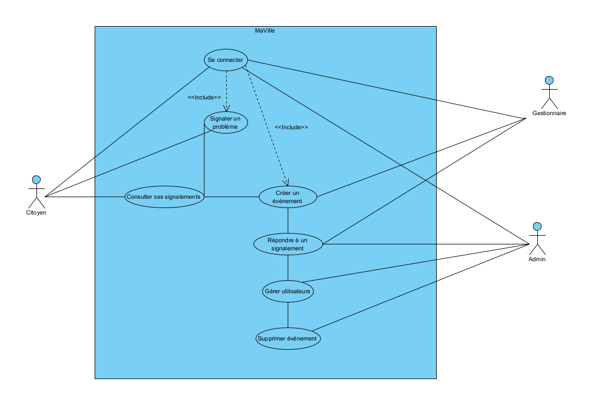
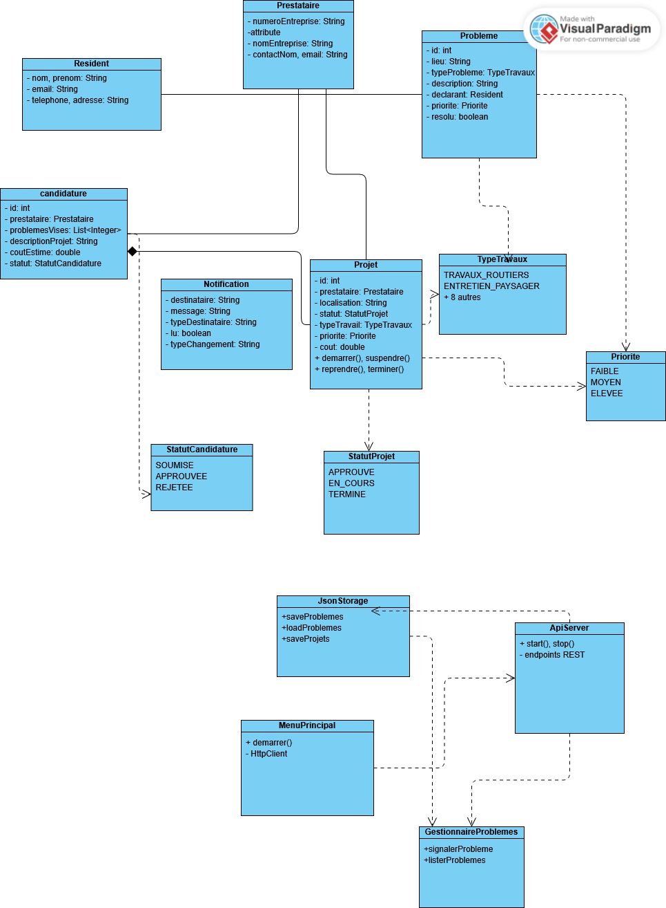

Projet MaVille - Application de Gestion des Travaux Publics
Session : Hiver 2025
Devoir : Devoir 3 - Architecture REST Complète et Système de Notifications
Table des matières
- 1. Cadre du projet
- 1.1 Description du projet
- 1.2 Évolution depuis les devoirs précédents
- 1.3 Hypothèses
- 1.4 Équipe et répartition du travail
- 2. Modélisation du domaine
- 2.1 Glossaire
- 2.2 Diagrammes métier et de domaine
- 3. Modélisation des exigences
- 3.1 Besoins non-fonctionnels
- 3.2 Besoins fonctionnels
- 4. Architecture et conception
- 4.1 Architecture REST
- 4.2 Diagrammes UML mis à jour
- 4.3 Système de notifications
- 5. Implémentation et tests
- 6. Documentation technique
1. Cadre du projet
1.1 Description du projet
Le projet MaVille vise à développer une application de gestion des travaux publics à Montréal, permettant aux citoyens de signaler des problèmes sur la voie publique et de suivre l'état des travaux effectués par le Service des Travaux Publics de Montréal (STPM). L'application implémente une architecture REST complète avec système de notifications temps réel.
1.1.1 Contexte et problématique
À Montréal, les travaux publics et privés sont une réalité constante qui affecte le quotidien des résidents. Les chantiers, souvent imprévus ou mal annoncés, entraînent des perturbations importantes, allant des embouteillages aux fermetures de routes et aux entraves piétonnières. Ces situations créent un sentiment de frustration et d'imprévisibilité chez les citoyens, qui se retrouvent souvent surpris par des interventions touchant leur mobilité et leur accès aux services.
Actuellement, les résidents ont accès à certaines informations liées aux entraves à la circulation grâce au service Info entraves et travaux. Ce service gratuit permet de s'informer sur les entraves causées par les travaux réalisés par la Ville, ses partenaires, les promoteurs immobiliers, les entrepreneurs privés et les particuliers. Cependant, le service présente certaines limites importantes, impactant son efficacité.
1.1.2 Proposition et solution
Le STPM (Service des Travaux Publics de Montréal) pense qu'une meilleure communication des activités et travaux prévus et entrepris par les prestataires pourrait réduire significativement les incompréhensions entre les différents acteurs. Une collaboration plus étroite entre les résidents, les prestataires et le STPM pourrait améliorer la coordination des travaux.
Ainsi, nous proposons la création de l'application MaVille, une solution complète qui :
- Automatise le processus de signalement et de gestion des problèmes routiers
- Facilite la communication entre résidents, prestataires et agents STPM
- Améliore la transparence et le suivi des travaux publics
- Réduit les perturbations et améliorations de la qualité de vie des citoyens
1.1.3 Fonctionnement actuel du STPM
Le fonctionnement actuel du STPM présente plusieurs limitations :
- Processus manuel : Utilisation de fichiers Excel et échanges manuels
- Communication limitée : Notifications par courriel non systématisées
- Manque de transparence : Difficulté pour les résidents de suivre l'état des travaux
- Coordination complexe : Gestion difficile entre les différents acteurs
- Données dispersées : Informations non centralisées et difficilement accessibles
1.1.4 Objectifs de l'application MaVille
L'application MaVille vise à résoudre ces problèmes en offrant :
- Interface unifiée : Plateforme centralisée pour tous les acteurs
- Processus automatisé : Gestion numérique des signalements et projets
- Système de notifications : Alertes temps réel pour tous les utilisateurs
- Transparence totale : Suivi en temps réel de l'état des travaux
- Intégration externe : Données officielles de la ville de Montréal
- Architecture moderne : Solution REST scalable et maintenable
1.2 Évolution depuis les devoirs précédents
Devoir 1 → Devoir 2 → Devoir 3
- Devoir 1 : Modélisation du domaine, diagrammes UML, prototype console basique
- Devoir 2 : Architecture REST, implémentation complète, tests unitaires, intégration API externe
- Devoir 3 : Architecture REST complète, système de notifications avancé, persistance JSON robuste, interface console interactive
Nouvelles fonctionnalités du Devoir 3 :
- ✅ Architecture REST complète : Serveur Javalin + Client HTTP
- ✅ Système de notifications temps réel : Abonnements automatiques et manuels
- ✅ Persistance JSON robuste : Synchronisation des IDs, sauvegarde automatique
- ✅ Interface console interactive : Menus hiérarchiques, navigation intuitive
- ✅ Gestion complète des projets : Création, validation, mise à jour de statut
- ✅ Intégration API externe : Données ouvertes de Montréal
- ✅ Filtrage avancé : Par quartier, type, statut, dates
1.3 Description des rôles et fonctionnalités DM3
1.3.1 Profils utilisateurs
L'application MaVille s'adresse à trois types d'utilisateurs distincts, chacun ayant des rôles et des fonctionnalités spécifiques :
1.3.2 Fonctionnalités communes
Tous les utilisateurs partagent certaines fonctionnalités de base :
- Interface console : Navigation intuitive avec menus hiérarchiques
- Système de notifications : Alertes personnalisées selon les préférences
- Persistance des données : Sauvegarde automatique des informations
- Validation des entrées : Gestion robuste des erreurs de saisie
1.3.3 Flux de travail principal
Le processus de gestion des travaux suit un flux bien défini :
- Signalement : Un résident signale un problème routier
- Priorisation : Le STPM affecte une priorité au problème
- Candidature : Un prestataire soumet une candidature pour résoudre le problème
- Validation : Le STPM accepte ou refuse la candidature
- Exécution : Le prestataire exécute les travaux et met à jour le statut
- Suivi : Les résidents sont notifiés des changements
1.3.4 Sources de données
L'application utilise deux sources de données pour les travaux :
- Travaux MaVille : Projets créés par les utilisateurs de l'application (modifiables)
- API de Montréal : Travaux officiels de la ville (lecture seule)
1.3 Hypothèses et contraintes
1.3.1 Hypothèses techniques
- Authentification : L'authentification est gérée par un service central de la ville de Montréal
- Profil utilisateur : Les utilisateurs choisissent leur profil au démarrage (Résident, Prestataire, Agent STPM)
- Architecture : L'application fonctionne en mode client-serveur avec API REST
- Persistance : Les données sont persistées en JSON pour la simplicité et la portabilité
- Interface : L'interface utilisateur est en ligne de commande pour ce prototype
- Connectivité : L'application nécessite une connexion Internet pour l'API externe de Montréal
1.3.2 Contraintes fonctionnelles
- Données d'initialisation : L'application doit être initialisée avec 5 résidents, 5 prestataires, 5 problèmes et 5 projets
- Notifications : Toutes les actions importantes doivent déclencher des notifications appropriées
- Validation : L'application ne doit pas s'arrêter sur une mauvaise entrée utilisateur
- Persistance : Les données doivent être préservées au-delà d'une session
- Filtrage : Les utilisateurs doivent pouvoir filtrer les données par quartier, type et dates
1.3.3 Contraintes techniques
- Java 17 : L'application nécessite Java 17 ou supérieur
- Maven : Utilisation de Maven pour la gestion des dépendances et la compilation
- Port 7000 : Le serveur API utilise le port 7000 par défaut
- Fichiers JSON : Les données sont stockées dans le dossier `data/`
- Tests unitaires : Minimum de 3 cas de tests pour 6 fonctionnalités avec JUnit
1.4 Équipe et répartition du travail
Matricule : 20256168
Discord : younes_lgha
GitHub : YounesLagha
Responsabilités : Architecture REST, API Server, Tests unitaires
Matricule : 20288301
Discord : dhxft
GitHub : dhxft
Responsabilités : Modèles de données, Services métier, Persistance JSON
Matricule : 20299978
Discord : rayyan20062
GitHub : Rayyan-Oumlil
Responsabilités : Interface utilisateur, Client HTTP, Documentation
1.5 Mise à jour complète de la conception
1.5.1 Architecture REST complète
L'application MaVille implémente une architecture REST moderne avec séparation claire entre le serveur API et le client. Cette architecture facilite la maintenance, les tests et l'extensibilité du système.
Composants de l'architecture :
- Serveur API (ApiServer.java) : Serveur Javalin sur le port 7000
- Client HTTP (HttpClient.java) : Client OkHttp pour communiquer avec l'API
- Interface console : Menus interactifs utilisant le client HTTP
- Persistance JSON : Stockage des données dans des fichiers JSON
1.5.2 Système de notifications avancé
Le système de notifications de MaVille offre une gestion intelligente des alertes avec plusieurs types d'abonnements :
Types d'abonnements :
- Abonnement automatique : Lorsqu'un résident signale un problème, il est automatiquement abonné aux notifications de son quartier
- Abonnement manuel : Possibilité de s'abonner à d'autres quartiers ou rues spécifiques
- Abonnement par type : Les prestataires peuvent s'abonner aux notifications de problèmes par type de travaux
Types de notifications :
- Nouveau projet créé dans le quartier
- Changement de statut d'un projet
- Modification des dates de travaux
- Problème résolu
- Nouvelle priorité affectée à un problème
1.5.3 Persistance JSON robuste
Le système de persistance JSON offre une solution simple mais robuste pour le stockage des données :
Caractéristiques de la persistance :
- Synchronisation des IDs : Évite les doublons lors du redémarrage
- Sauvegarde automatique : Données persistées après chaque modification
- Fichiers séparés : Un fichier JSON par type d'entité
- Données de test : Initialisation automatique avec des données d'exemple
- Gestion des erreurs : Récupération gracieuse en cas de problème de fichier
1.5.4 Interface console interactive
L'interface console offre une navigation intuitive avec des menus hiérarchiques organisés par profil utilisateur :
Caractéristiques de l'interface :
- Menus par profil : Résident, Prestataire, Agent STPM
- Navigation hiérarchique : Maximum 3 niveaux d'imbrication
- Retour facile : Option "0" pour revenir au menu précédent
- Validation des entrées : Gestion des erreurs de saisie
- Affichage formaté : Informations présentées de manière claire
- Compteurs de notifications : Affichage du nombre de notifications non lues
1.5.5 Intégration API externe
L'application intègre l'API de données ouvertes de Montréal pour récupérer les travaux officiels de la ville :
Fonctionnalités de l'intégration :
- Récupération automatique : Données des travaux en cours de la ville
- Fusion des données : Combinaison des travaux MaVille et officiels
- Filtrage unifié : Recherche dans toutes les sources de données
- Gestion des erreurs : Récupération gracieuse en cas d'indisponibilité de l'API
2. Modélisation du domaine
2.1 Glossaire
- STPM : Service des Travaux Publics de Montréal. Il centralise les signalements, attribue les priorités, valide les projets proposés par les prestataires, et gère la coordination générale.
- Résident : Personne vivant à Montréal. Il peut signaler un problème routier, s’abonner à des secteurs géographiques, et consulter les travaux en cours.
- Prestataire : Entreprise enregistrée pouvant consulter les problèmes signalés, proposer des projets et mettre à jour l’état de leurs interventions.
- Signalement : Déclaration formelle faite par un résident pour alerter le STPM d’un problème sur l’espace public. Inclut un lieu, un type, une description, et des coordonnées.
- Fiche de signalement : Enregistrement interne d’un signalement dans le système du STPM, contenant des informations enrichies (priorité, statut, affectation…).
- Priorité : Importance assignée par le STPM à un signalement. Trois niveaux possibles : faible, moyenne, élevée. Elle influence l’ordre de traitement.
- Candidature : Proposition soumise par un prestataire pour prendre en charge un ou plusieurs problèmes. Elle inclut la description des travaux, les dates, les coûts et le type d’intervention.
- Projet : Initiative validée par le STPM pour résoudre un ou plusieurs problèmes. Un projet est lié à une candidature acceptée, à un prestataire, à un statut d’avancement, et à des dates planifiées.
- StatutProjet : Phase actuelle d’un projet. Peut être : En attente, En cours, Suspendu, ou Terminé.
- StatutCandidature : État d’une candidature déposée. Peut être : En attente, Approuvée, ou Rejetée.
- TypeTravaux : Catégorie décrivant la nature d’un projet. Exemples : travaux routiers, entretien paysager, gaz/électricité, transports, signalisation, etc.
- Quartier : Secteur géographique administratif de Montréal utilisé pour localiser les problèmes et filtrer les projets.
- Filtre : Critère appliqué par un utilisateur pour restreindre les résultats visibles dans l’interface (par type, quartier ou date).
- Abonnement secteur : Préférence enregistrée par un résident pour être automatiquement informé des projets dans un quartier donné.
- API Montréal : Interface fournie par la Ville de Montréal permettant à l’application de récupérer dynamiquement des données sur les travaux publics en cours, via des requêtes HTTP.
2.2 Diagrammes métier et de domaine et CU
2.3 Diagrammes d’activités – Fonctions clés
Consulter les entraves

Suivi d'une requête

Système de notifications

Plannification d'un projet

Recherche de travaux

Suivi d'une requête
Système/Citoyen

Diagramme de classes

Diagramme de séquence (signalement d’un problème)

Diagramme de cas d'utilisation
Diagramme de cas d'utilisation (Devoir 3)
Justification des choix de conception : encapsulation, couplage, cohésion, abstraction
Le design du diagramme de séquence réalisé applique les principes fondamentaux d’encapsulation, de faible couplage, de forte cohésion et d’abstraction fonctionnelle.
-
Encapsulation : Chaque objet (par exemple
FormulaireSignalement,SignalementService) gère et protège ses propres données et comportements. Cela facilite la maintenance et la lisibilité du code, chaque entité étant responsable de ses états internes. -
Faible couplage : Le système limite les dépendances entre les composants : les objets communiquent uniquement via leurs interfaces publiques (ex :
InterfaceApputilise des méthodes sans connaître l’implémentation). Les composants peuvent ainsi évoluer indépendamment. -
Forte cohésion : Chaque classe a une responsabilité unique et claire. Par exemple,
SignalementServicene gère que les signalements, ce qui améliore la clarté et la robustesse du système. - Abstraction : Les utilisateurs interagissent à un niveau abstrait, les détails d’implémentation étant masqués derrière des appels de méthode. Cela favorise la modularité et l’évolutivité du code.
3. Modélisation des exigences
3.1 Besoins non-fonctionnels
-
Protection des données confidentielles
Description : L’application ne doit pas stocker ou afficher de données sensibles (comme les noms ou adresses complètes des résidents) sans autorisation explicite. Les signalements doivent être anonymisés du côté public.
Justification : Le respect de la vie privée est essentiel pour assurer la confiance des usagers, d’autant plus que ces normes reflètent celles de la Ville de Montréal. -
Capacité à gérer plusieurs signalements simultanément
Description : Le système doit permettre l’enregistrement et la consultation de plusieurs signalements en parallèle sans perte ou écrasement de données.
Justification : En période de forte activité (ex. : été), plusieurs résidents peuvent signaler des problèmes en même temps. L’application doit donc rester stable et cohérente. -
Bilinguisme (français/anglais)
Description : L’application doit être disponible en français et en anglais, avec une option de sélection de langue.
Justification : Cela reflète la réalité linguistique de Montréal et peut représenter une obligation légale. -
Rapidité de signalement
Description : Le parcours utilisateur pour signaler un problème ne doit pas excéder trois étapes, afin de limiter la friction et encourager l’usage.
Justification : Cela favorise l’usage de l’application et facilite son adoption par le plus grand nombre de résidents. -
Intégration d’une carte de Montréal (version ultérieure)
Description : L’application doit être conçue pour pouvoir intégrer une API cartographique (ex. : Google Maps, OpenStreetMap, etc.) pour localiser visuellement les signalements, en tenant compte des permissions d’utilisation et de la granularité des données.
Justification : La localisation visuelle améliore la compréhension et le traitement des signalements, ce qui est crucial pour les résidents comme pour la ville.
3.2 Besoins fonctionnels – Cas d’utilisation et descriptions
Acteurs
-
Acteur principal :
Résidents – habitants de la ville ; utilisateurs principaux du système. Ce rôle inclut aussi l’AgentSTPM et le Prestataire. -
Acteurs secondaires :
- AgentSTPM – Reçoit les plaintes/signalements, analyse leur validité, et gère la priorité/acceptation.
- Prestataire – Intervient sur les problèmes approuvés : propose des projets, effectue les réparations, met à jour l’avancement.
Principaux cas d’utilisation
- Rechercher des travaux : Permet au résident de chercher des travaux spécifiques par quartier ou par type (routier, gaz, signalisation, etc.) pour accéder rapidement à l’information ciblée.
- Consulter les travaux : Le résident visualise les projets planifiés ou en cours, filtrables par quartier ou type. Il peut s’informer et anticiper les impacts sur sa mobilité.
- Signaler un problème routier à la ville : Le résident utilise l’application pour signaler un problème/anomalie dans sa zone, en remplissant un formulaire détaillé.
- Affecter une priorité à un problème : L’AgentSTPM analyse les plaintes soumises et les classe par ordre de priorité.
- Accepter ou refuser des projets de travaux : Si la plainte est approuvée par l’AgentSTPM, elle est assignée à un prestataire pour intervention.
- Mettre à jour les informations d’un projet : Après acceptation, le prestataire peut modifier la description, la date de fin, ou le statut du projet.
- Consulter la liste des problèmes routiers : Permet au prestataire de voir les problèmes à traiter, filtrables par type, quartier ou date de début.
- Soumettre une candidature à un projet : Le prestataire propose une solution pour un problème et confirme qu’il prendra en charge l’intervention.
- Envoyer une notification : Le résident reçoit une notification à chaque étape importante (prise en compte, modification, résolution…).
Scénario type
Le résident ouvre l’application, se dirige vers “signaler un problème routier” et remplit un formulaire (type, localisation, description…). Il envoie le formulaire, qui est analysé par l’AgentSTPM (validation ou refus, affectation d’une priorité). Les projets acceptés sont transmis à un prestataire qui peut consulter, candidater ou mettre à jour les problèmes/projets. À chaque étape clé, le résident est notifié de l’avancement ou de la prise en compte de sa demande.
Extensions (exceptions possibles)
- Localisation incorrecte
- Informations manquantes
- Photo floue/non lisible
- Problème déjà attribué
Préconditions
- L’utilisateur a accès à l’application
- Agent authentifié
- Une plainte doit avoir été soumise
- Droit d’accès élevé pour l’Agent
Postconditions
- Les plaintes/signalements sont stockés dans le système
- Approbation attendue par l’Agent ou le Prestataire
4. Prototype
5. Architecture logicielle et évolution du projet (Devoir 2)
Dans le cadre de cette deuxième itération du projet MaVille, l’équipe a poursuivi le développement en approfondissant l’analyse des exigences, la conception de l’architecture logicielle et la mise en œuvre d’une application fonctionnelle basée sur une API REST. Cette section présente l’ensemble des changements, améliorations et choix techniques réalisés : revue des besoins, justification du style architectural, description des principaux composants, illustration du modèle objet, et organisation du développement collaboratif.
L’objectif est de démontrer la capacité du prototype à répondre aux enjeux identifiés (communication, coordination, persistance, notifications) tout en assurant la modularité, la maintenabilité et l’évolutivité du système. La structure du projet est expliquée de façon à préparer une extension future vers des interfaces graphiques ou mobiles.
5.1 Révision des exigences et feedback
Suite à la première livraison du projet MaVille, l’équipe a pris en compte l’ensemble des retours du client, des auxiliaires et de l’énoncé révisé pour faire évoluer l’application dans cette seconde itération :
- Clarification des besoins et des acteurs : Nous avons affiné la définition des rôles (résidents, prestataires, STPM), ainsi que les interactions entre eux, pour que chaque fonctionnalité corresponde précisément aux attentes du client.
- Refonte du cycle de vie des entités : L’ensemble des cas d’utilisation (signalement, validation, candidature, projet, notifications) a été retravaillé pour intégrer les statuts intermédiaires et la validation manuelle par le STPM, conformément à l’énoncé.
- Passage à une architecture REST complète : Toutes les interactions de l’application se font désormais via des endpoints REST (GET, POST, PUT), séparant clairement l’interface (menus CLI) de la logique métier et de la persistance.
- Gestion de la persistance par fichiers JSON : Chaque entité (problème, projet, candidature, résident, prestataire, notification) est désormais stockée dans un fichier dédié, garantissant la conservation des données même après fermeture de l’application.
- Amélioration de la navigation CLI et de la validation utilisateur : Les menus principaux et secondaires ont été simplifiés et sécurisés (validation des entrées, messages d’erreur explicites, retour au menu principal en tout temps).
- Prise en charge des notifications : Un mécanisme de notification simple a été ajouté pour informer les résidents et prestataires des changements de statut de leurs signalements ou projets.
- Documentation et tests : Le README a été mis à jour, des instructions d’utilisation et de tests unitaires ont été ajoutées, et la gestion du projet via GitHub a été renforcée (branches, issues, release).
- Intégration des feedbacks client : Nous avons systématiquement intégré les suggestions, telles que l’automatisation de l’affectation des priorités, l’abonnement automatique aux notifications, et la gestion des statuts des entités.
L’ensemble de ces améliorations garantit une solution robuste, extensible et alignée avec les attentes du client, tout en posant les bases pour une extension future.
5.2 Définition et justification de l’architecture logicielle
- Style architectural retenu :
L’architecture retenue pour MaVille est une architecture en couches (n-tiers), enrichie d’une approche REST et d’une inspiration MVC pour l’organisation du code. Le cœur métier est isolé dans des gestionnaires et des modèles, l’interface utilisateur est gérée via une CLI (menus), la communication inter-couche se fait par une API REST, et la persistance se fait par stockage JSON simple (un fichier par entité). - Justification :
- Séparation claire des responsabilités pour chaque couche (UI, services métier, stockage, API)
- Facilité d’évolution et de maintenance : on peut remplacer l’UI ou le backend indépendamment.
- Interopérabilité : d’autres clients (web, mobile) pourraient réutiliser l’API REST sans changement majeur.
- Testabilité et réutilisabilité : chaque couche ou composant peut être testé séparément.
5.3 Diagramme d’architecture (composants principaux)
Diagramme d’architecture globale de MaVille (Devoir 2)

Explication de l’architecture container de MaVille
Ce diagramme représente l’architecture logicielle du projet MaVille selon le modèle “container” (niveau C4). On distingue clairement les différentes couches et composants du système :
- Utilisateurs (Résident, Prestataire, STPM) : Interagissent via l’interface en ligne de commande (CLI) pour signaler un problème, consulter ou gérer des travaux.
- Interface CLI MaVille : Point d’entrée de l’application pour tous les profils, offrant un menu console interactif.
- Client REST (HttpClient) : Fait le lien entre la CLI et le serveur API MaVille, transmettant les requêtes via HTTP en JSON.
- Serveur API MaVille : Composant central qui expose les endpoints REST, orchestre la logique métier et assure la cohérence des traitements.
- Gestionnaires Métiers : Modules spécialisés qui gèrent la logique propre à chaque entité du domaine (problèmes, projets, candidatures, notifications).
- Database (Stockage JSON) : Système de persistance utilisant des fichiers JSON pour conserver toutes les données du système, assurant ainsi la continuité même après redémarrage.
- API Info-Entraves Montréal : Service externe consulté par le serveur pour enrichir l’information sur les travaux en cours, assurant une actualisation des données publiques.
Ce découpage favorise la modularité, la séparation des responsabilités et la facilité d’évolution de l’application. Il permet également d’intégrer de nouveaux clients (ex : application web ou mobile) en réutilisant la même API REST, et garantit la robustesse du système par l’isolation des couches.
5.4 Diagramme de classes orienté objet (version finale)
Diagramme de classes - Modèle orienté objet (version finale)
Diagramme de classes conforme à l'implémentation actuelle avec architecture REST
5.5 Architecture REST complète
L'application MaVille implémente une architecture REST complète avec séparation claire entre le serveur API et le client. Cette architecture moderne facilite la maintenance, les tests et l'extensibilité du système.
5.5.1 Composants de l'architecture
- Serveur API (ApiServer.java) : Serveur Javalin sur le port 7000
- Client HTTP (HttpClient.java) : Client OkHttp pour communiquer avec l'API
- Interface console : Menus interactifs utilisant le client HTTP
- Persistance JSON : Stockage des données dans des fichiers JSON
5.5.2 Endpoints REST principaux
Gestion des problèmes
GET /api/residents/problemes- Consulter les problèmes signalésPOST /api/residents/problemes- Signaler un nouveau problèmePUT /api/stpm/problemes/{id}/priorite- Modifier la priorité d'un problème
Gestion des projets
GET /api/residents/travaux- Consulter les travaux en coursGET /api/prestataires/problemes- Problèmes disponibles pour candidaturePOST /api/prestataires/candidatures- Soumettre une candidaturePUT /api/stpm/candidatures/{id}/valider- Valider une candidaturePUT /api/prestataires/projets/{id}- Mettre à jour un projet
Système de notifications
GET /api/residents/notifications- Consulter les notificationsPOST /api/residents/abonnements- Créer un abonnementGET /api/residents/abonnements- Consulter les abonnements
Intégration externe
GET /api/montreal/travaux- Travaux officiels de la ville de Montréal
5.6 Système de notifications avancé
Le système de notifications de MaVille offre une gestion intelligente des alertes avec abonnements automatiques et manuels.
5.6.1 Fonctionnalités du système de notifications
- Abonnement automatique : Lorsqu'un résident signale un problème, il est automatiquement abonné aux notifications de son quartier
- Abonnement manuel : Possibilité de s'abonner à d'autres quartiers ou rues spécifiques
- Types de notifications :
- Nouveau projet créé dans le quartier
- Changement de statut d'un projet
- Modification des dates de travaux
- Problème résolu
- Filtrage intelligent : Notifications personnalisées selon les préférences de l'utilisateur
5.7 Persistance JSON robuste
Le système de persistance JSON offre une solution simple mais robuste pour le stockage des données.
5.7.1 Caractéristiques de la persistance
- Synchronisation des IDs : Évite les doublons lors du redémarrage
- Sauvegarde automatique : Données persistées après chaque modification
- Fichiers séparés : Un fichier JSON par type d'entité
- Données de test : Initialisation automatique avec des données d'exemple
5.8 Interface console interactive
L'interface console offre une navigation intuitive avec des menus hiérarchiques organisés par profil utilisateur.
5.8.1 Caractéristiques de l'interface
- Menus par profil : Résident, Prestataire, Agent STPM
- Navigation hiérarchique : Maximum 3 niveaux d'imbrication
- Retour facile : Option "0" pour revenir au menu précédent
- Validation des entrées : Gestion des erreurs de saisie
- Affichage formaté : Informations présentées de manière claire
5.9 Implémentation REST et persistance
L'application MaVille s'appuie sur une architecture RESTful pour l'intégralité des interactions entre le client (interface CLI) et le serveur. Chaque fonctionnalité métier est exposée via des endpoints HTTP clairs, facilitant à la fois l'utilisation par différents clients (CLI, futur site web ou app mobile) et la maintenance/extensibilité du système.
-
Principaux endpoints REST :
GET /api/problemes– Liste tous les problèmes signalés dans le système.POST /api/problemes– Permet à un résident de signaler un nouveau problème.PUT /api/problemes/:id– Met à jour les informations ou le statut d'un problème existant (ex. : résolution, changement de priorité).GET /api/projets– Récupère la liste complète des projets de travaux validés ou en cours.POST /api/projets– Ajoute un nouveau projet (suite à validation d'une candidature ou d'un besoin par le STPM).PUT /api/projets/:id– Met à jour un projet (ex. : dates, description, statut).GET /api/candidatures– Liste toutes les candidatures déposées par les prestataires.POST /api/candidatures– Permet à un prestataire de soumettre une nouvelle candidature à un ou plusieurs problèmes.PUT /api/candidatures/:id– Permet la modification ou l'annulation d'une candidature (tant qu'elle n'est pas validée).GET /api/notifications– Liste les notifications envoyées aux utilisateurs (ex. : confirmation de prise en charge, changement de statut).POST /api/notifications– Ajoute une nouvelle notification ciblée.PUT /api/notifications/:id– Marque une notification comme lue ou modifie son contenu en cas d'erreur.
Tous les échanges se font en JSON, garantissant l'interopérabilité et la simplicité d'intégration avec d'autres systèmes.
Ce découpage rigoureux entre API REST et couche de persistance positionne MaVille comme une solution moderne, évolutive et conforme aux standards industriels, tout en facilitant la maintenance, les tests et l'ouverture vers d'autres plateformes ou services municipaux à l'avenir.
6. Implémentation et tests
6.1 Tests unitaires
L'application MaVille inclut une suite de tests unitaires complète pour valider le bon fonctionnement des classes principales.
6.1.1 Classes testées
- ProblemeTest.java : Tests de création, validation et synchronisation des IDs
- CandidatureTest.java : Tests de soumission, validation et modification
- ResidentTest.java : Tests de gestion des résidents et abonnements
6.1.2 Exécution des tests
# Exécuter tous les tests
mvn test
# Tests avec rapport détaillé
mvn test -X
# Tests d'une classe spécifique
mvn test -Dtest=ProblemeTest
Couverture de tests – JaCoCo
Nous avons utilisé JaCoCo pour évaluer la couverture des tests unitaires. Le rapport est accessible dans le dossier raport/jacoco/index.html.
6.2 Documentation technique
La documentation technique complète est générée automatiquement à partir du code source.
6.2.1 Documentation des classes
Chaque classe du modèle inclut une documentation JavaDoc complète décrivant :
- Rôle et responsabilité de la classe
- Paramètres des constructeurs
- Fonctionnalités des méthodes publiques
- Exemples d'utilisation
6.2.2 Génération de la documentation
# Générer la documentation JavaDoc
mvn javadoc:javadoc
# Documentation disponible dans target/site/apidocs/index.html
Intégration continue avec GitHub Actions
Un workflow CI a été configuré pour ce projet avec GitHub Actions. Il est défini dans le fichier .github/workflows/ci.yml.
À chaque push ou pull request sur la branche main, les tests JUnit sont automatiquement exécutés via Maven, garantissant que seul du code fonctionnel est intégré à la branche principale.
Lien vers les workflows : https://github.com/IFT-2255/ift2255-ma-ville-team9/actions/runs/16689290497
6.3 Données de test
L'application est initialisée automatiquement avec des données de test :
- 5 résidents : Marie, Jean, Sophie, Pierre, Marc
- 5 prestataires : Construction ABC Inc., Pavage Pro Ltée, Électricité Montréal, Paysagement Vert, TechnoVert Solutions
- 5 problèmes : Dans différents quartiers avec diverses priorités
- 5 candidatures : En attente de validation par le STPM
7. Équipe et répartition du travail
Matricule : 20256168
Discord : younes_lgha
GitHub : YounesLagha
Responsabilités : Architecture REST, API Server, Tests unitaires
Matricule : 20288301
Discord : dhxft
GitHub : dhxft
Responsabilités : Modèles de données, Services métier, Persistance JSON
Matricule : 20299978
Discord : rayyan20062
GitHub : Rayyan-Oumlil
Responsabilités : Interface utilisateur, Client HTTP, Documentation
4.3 Instructions d'utilisation
Exécution via le JAR (recommandé)
1. Téléchargez le fichier maville-1.0-SNAPSHOT.jar depuis la section "Releases" du projet GitHub.
2. Ouvrez un terminal et placez-vous dans le dossier où se trouve le fichier JAR.
3. Exécutez la commande suivante :
java -jar maville-1.0-SNAPSHOT.jar
Alternative : Utilisation avec un IDE (IntelliJ, VSCODE, etc.)
- Importez le projet en tant que projet Maven dans votre IDE préféré.
- Lancez la classe
ca.udem.maville.Main(clic droit > "Run" ou équivalent).
Navigation dans l'application
- Au démarrage, choisir le profil (Résident ou Prestataire ou STPM)
- Naviguer dans les menus avec les numéros
- Utiliser "0" pour revenir au menu précédent
- Suivre les instructions à l'écran pour les saisies
- Choisir "Quitter" dans le menu principal pour terminer
Conclusion
Ce prototype évolué démontre la faisabilité de l'application MaVille, intègre l'architecture REST, et pose les bases d'une application maintenable, modulaire et extensible pour la gestion des travaux publics à Montréal. Les contributions de chaque membre, la rigueur du développement collaboratif, et l'intégration des retours client assurent la qualité de la solution livrée.